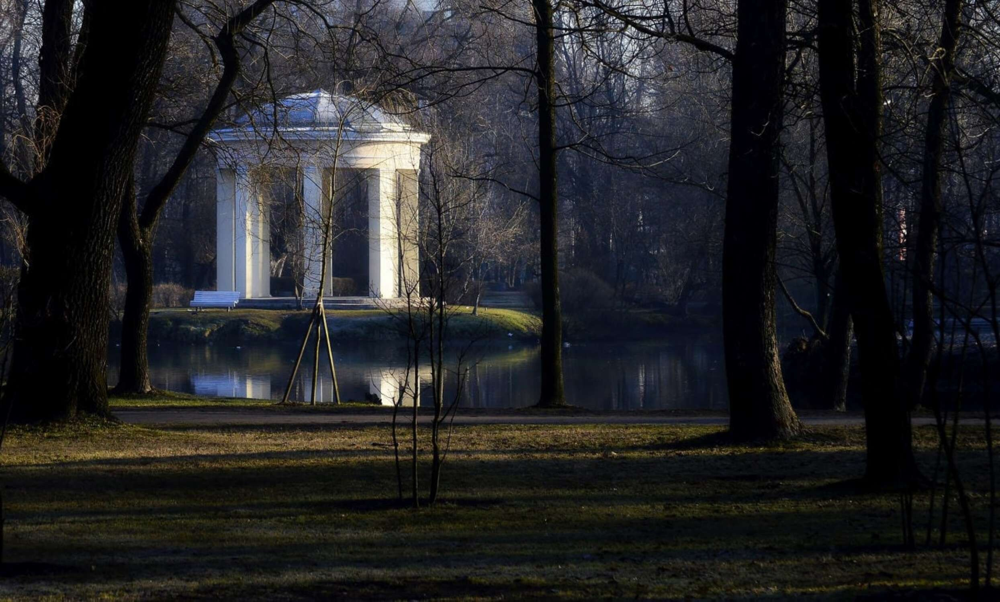
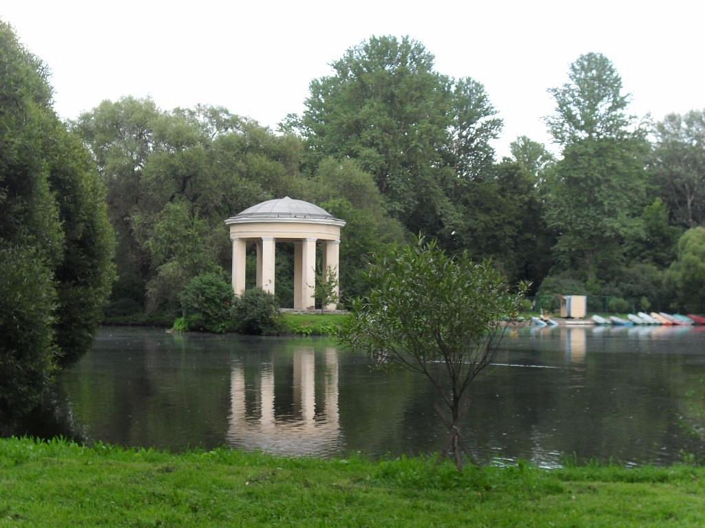
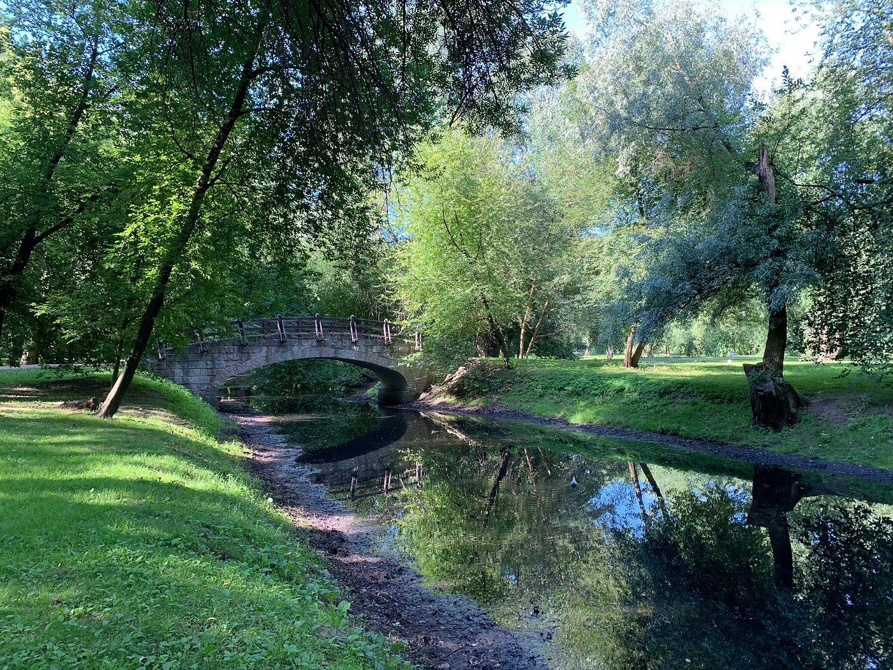
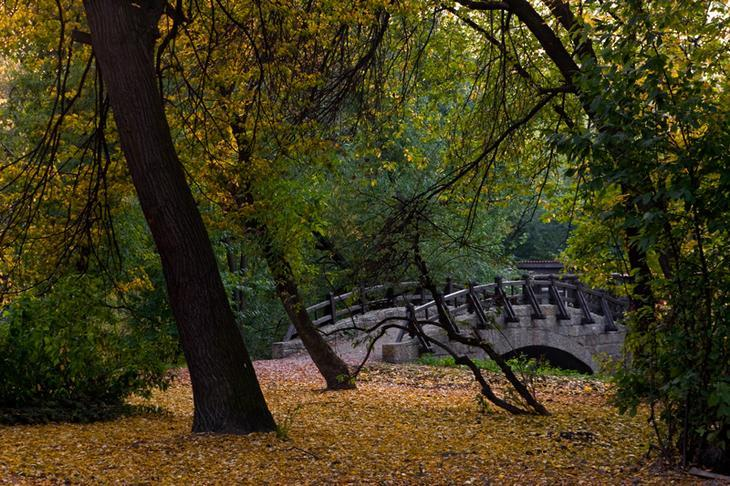

Чёртова пустошь в Екатерингофе

Легенда
До того как здесь появился парк, местность носила название Чёртова пустошь. Место пользовалось дурной славой: по ночам над болотом мелькали блуждающие огоньки и раздавались жуткие звуки. Говорили, что здесь нечисто.

Однако именно это привлекло фабриканта Шаканиди, который увлекался спиритизмом, мистикой и чёрной магией. В начале XX века он выкупил пустошь и построил на ней роскошный особняк с парком. Соседи считали его колдуном и старались обходить стороной.

В 1918 году в дом нагрянули чекисты с обыском. Фабрикант попытался помешать им, но был застрелен на месте. Чтобы скрыть следы преступления, его тело засунули в мешок и утопили в одном из прудов парка. В особняке разместили пансионат для старых большевиков и политкаторжан — людей, которых не пугали царские казематы. Но даже они, выходя на прогулку, с ужасом убегали обратно: по парку бродило привидение убитого Шаканиди. Говорят, неприкаянный дух фабриканта до сих пор появляется на территории парка в поисках отмщения.
Что было на самом деле
Местность на берегу реки Екатерингофки (в XVIII веке она называлась Чёрной речкой) действительно вошла в историю: 7 мая 1703 года здесь была одержана первая морская победа Петра I над шведами. В 1711 году император повелел архитектору Ж. Б. Леблону возвести для своей жены Екатерины деревянную усадьбу и разбить сад. Из-за постоянных наводнений имение использовалось только летом, а после смерти Петра I и вовсе опустело.

Документальных подтверждений существования фабриканта Шаканиди, а тем более его убийства чекистами, не найдено. В архивах нет записей о расстреле владельца особняка и утоплении тела в пруду. Сохранившееся до наших дней здание администрации парка было построено в 1958 году и не имеет отношения к дореволюционным постройкам. Легенда о «Чёртовой пустоши» и призраке фабриканта-колдуна — всего лишь красивая городская страшилка, которую активно тиражируют туристические порталы. Екатерингоф же был популярным местом отдыха горожан — сначала знати, а затем и рабочих с соседних мануфактур.
← Назад к карте